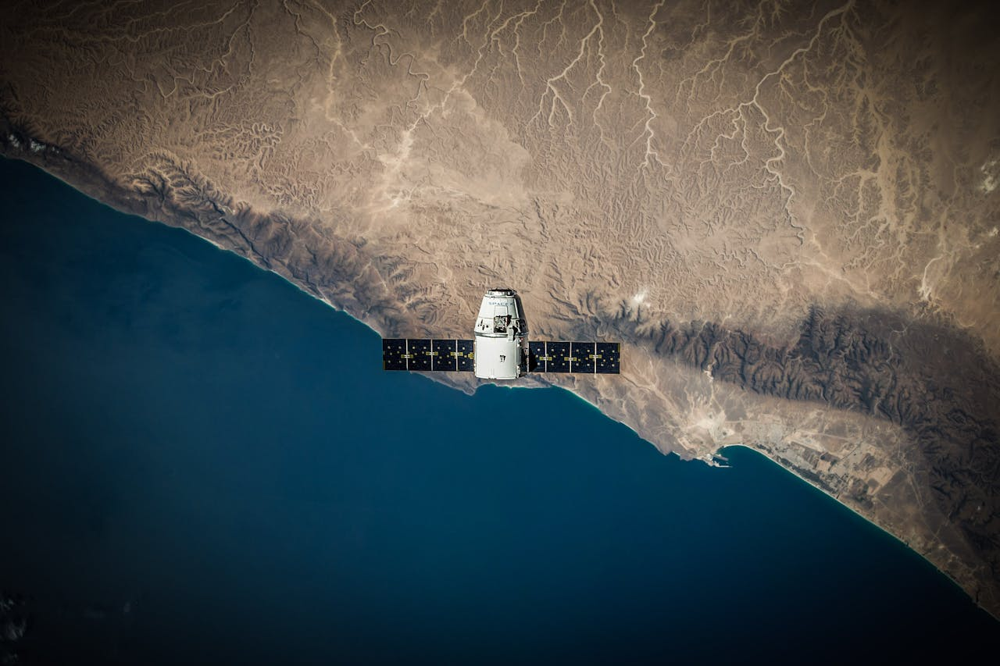
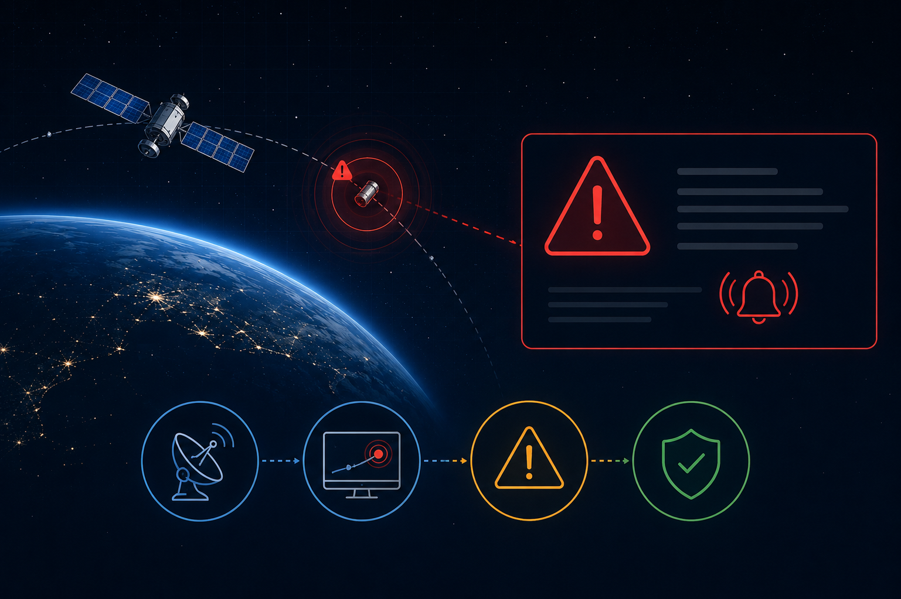
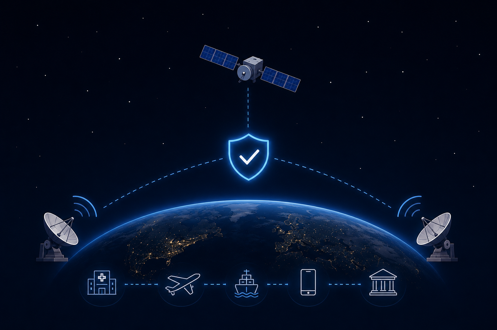

O aumento do lixo espacial na órbita da Terra tem se tornado um problema crescente nas últimas décadas, especialmente com a expansão das atividades e pesquisas espaciais. Esse acúmulo de objetos em órbita pode causar interferências e instabilidades nos sistemas de comunicação baseados em satélites, afetando serviços essenciais como internet, GPS, telefonia, aviação e monitoramento climático, além de aumentar o risco de falhas e perdas de sinal.
Diante desse cenário, propõe-se uma solução capaz de monitorar, simular e prever instabilidades nesses sistemas de comunicação orbital, identificando possíveis riscos de interferência nos sinais e permitindo a geração de alertas preventivos para reduzir impactos em infraestruturas críticas.



Monitorar continuamente a estabilidade dos sistemas de comunicação orbital, identificando possíveis interferências que possam comprometer a transmissão segura e eficiente de sinais.

Simular diferentes cenários de interferência espacial, avaliando os impactos do lixo orbital sobre a qualidade e confiabilidade das comunicações via satélite.

Prever riscos de instabilidade nos sistemas monitorados, utilizando análises de dados para antecipar falhas e interrupções nos serviços essenciais.

Gerar alertas preventivos em tempo real, permitindo que operadores identifiquem rapidamente situações críticas e adotem medidas de mitigação adequadas.

Contribuir para a segurança das comunicações orbitais, fortalecendo a confiabilidade de serviços essenciais que dependem diretamente de tecnologias satelitais.
MAs empresas responsáveis por serviços de telefonia, internet e transmissão de dados utilizam satélites para garantir conectividade em diversas regiões. O Nebula Noise permite monitorar possíveis interferências e prever instabilidades que possam afetar a qualidade desses serviços, contribuindo para a redução de interrupções e perdas de sinal.
Profissionais responsáveis pelo monitoramento e controle de satélites necessitam acompanhar constantemente as condições que podem comprometer a comunicação orbital. A plataforma fornece simulações, análises e alertas preventivos para auxiliar na identificação antecipada de problemas.
Entidades responsáveis pelo monitoramento do espaço e pela gestão de infraestruturas críticas podem utilizar os dados gerados para apoiar estudos, planejamentos e estratégias de mitigação de riscos relacionados ao aumento da atividade orbital.
Sistemas de navegação aérea e marítima dependem fortemente de sinais de GPS e de comunicações por satélite. Qualquer instabilidade nesses sistemas pode afetar a precisão das operações e comprometer a segurança dos transportes.
Universidades, centros de pesquisa e estudantes interessados na área espacial podem utilizar a plataforma como ferramenta de aprendizado e análise de cenários orbitais. As simulações permitem compreender os impactos do lixo espacial sobre as comunicações modernas.
Organizações responsáveis pela coleta e análise de dados meteorológicos e ambientais podem utilizar as informações geradas para acompanhar possíveis impactos de interferências orbitais na transmissão de dados provenientes de satélites de observação da Terra.
O sistema auxilia na identificação antecipada de possíveis interferências, contribuindo para a manutenção da qualidade e da continuidade dos serviços de comunicação via satélite.
Por meio do monitoramento e das simulações realizadas, é possível prever cenários de risco e adotar medidas preventivas antes que ocorram interrupções nos sistemas.
Os alertas e análises fornecidos pela plataforma permitem que operadores e gestores tomem decisões mais rápidas e assertivas diante de situações críticas.
O projeto contribui para a compreensão dos efeitos do aumento da atividade orbital sobre os sistemas de comunicação, auxiliando na mitigação de riscos associados.
A solução promove maior confiabilidade em infraestruturas que dependem de satélites, como internet, GPS, telefonia, navegação e monitoramento climático.
O Nebula Noise pode ser utilizado para fins educacionais e científicos, apoiando estudos relacionados à comunicação orbital, ao lixo espacial e às tecnologias aeroespaciais.

MAs empresas responsáveis por serviços de telefonia, internet e transmissão de dados utilizam satélites para garantir conectividade em diversas regiões. O Nebula Noise permite monitorar possíveis interferências e prever instabilidades que possam afetar a qualidade desses serviços, contribuindo para a redução de interrupções e perdas de sinal.
Profissionais responsáveis pelo monitoramento e controle de satélites necessitam acompanhar constantemente as condições que podem comprometer a comunicação orbital. A plataforma fornece simulações, análises e alertas preventivos para auxiliar na identificação antecipada de problemas.
Entidades responsáveis pelo monitoramento do espaço e pela gestão de infraestruturas críticas podem utilizar os dados gerados para apoiar estudos, planejamentos e estratégias de mitigação de riscos relacionados ao aumento da atividade orbital.
Sistemas de navegação aérea e marítima dependem fortemente de sinais de GPS e de comunicações por satélite. Qualquer instabilidade nesses sistemas pode afetar a precisão das operações e comprometer a segurança dos transportes.
Universidades, centros de pesquisa e estudantes interessados na área espacial podem utilizar a plataforma como ferramenta de aprendizado e análise de cenários orbitais. As simulações permitem compreender os impactos do lixo espacial sobre as comunicações modernas.
Organizações responsáveis pela coleta e análise de dados meteorológicos e ambientais podem utilizar as informações geradas para acompanhar possíveis impactos de interferências orbitais na transmissão de dados provenientes de satélites de observação da Terra.